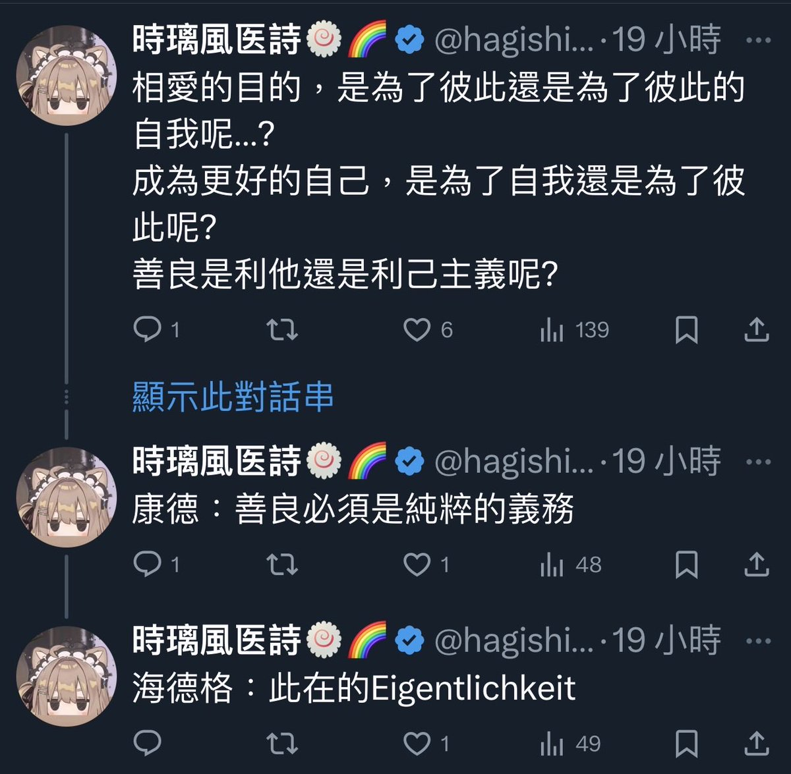
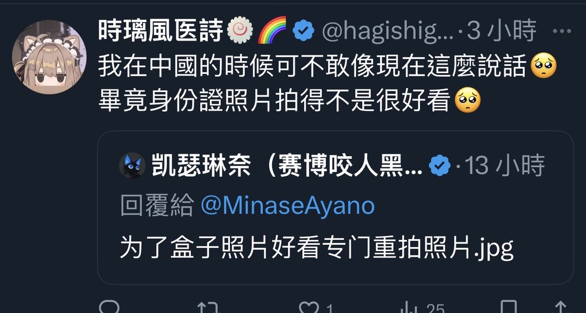
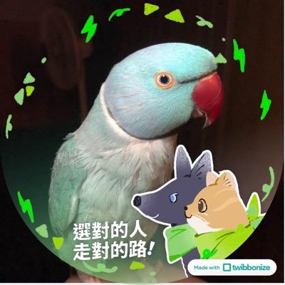

時璃風医詩🍥🌈
@hagishigure
「辣媽」＾_＾
看來你在成為女性和附屬物之間選擇了附屬物，那我也沒什麼可以說的了＾_＾
畢竟你把「辣媽」這個詞放得比自己的網名的位置都「靠前」。
北七＾_＾



最美辣媽✨膠桃白🦜不死鳥重生
@Shi987i997on
看到彩虹我就直接膝反射了
有ㄐㄐ還闖進女性空間看女性裸體最善良了是不是 https://t.co/tXa0m5maAA https://t.co/dbbxvXvCT3